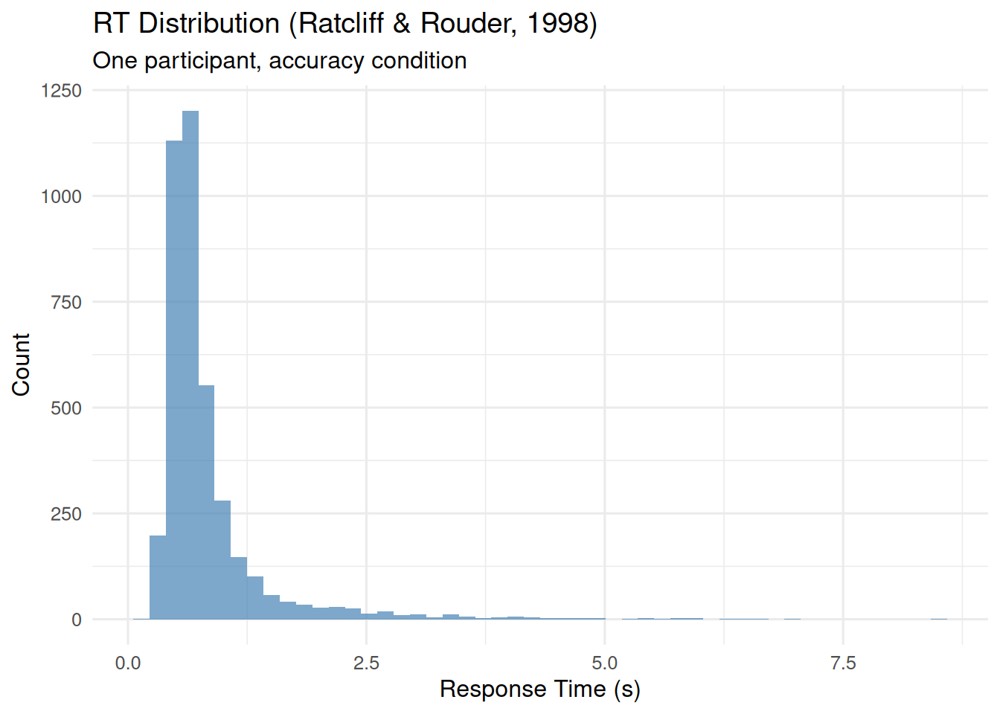
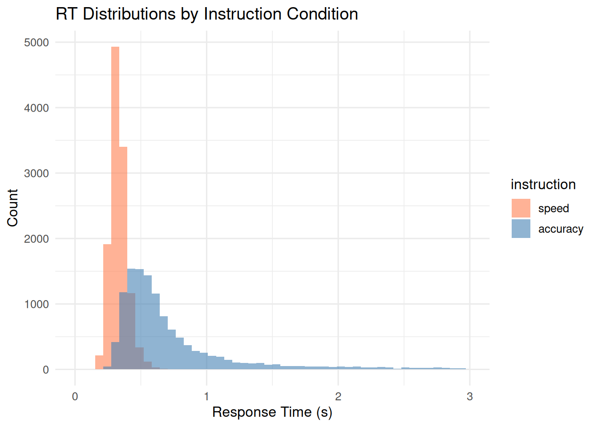
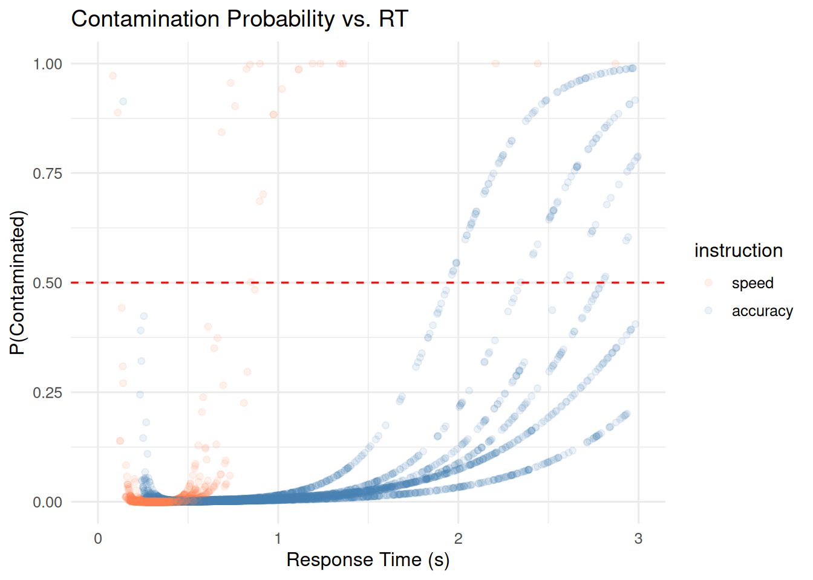

Handling RT Contamination in Evidence Accumulation Models
Gidon Frischkorn
Source:vignettes/articles/bmm_rt_contamination.Rmd
bmm_rt_contamination.Rmd
library(bmm)
library(dplyr)
library(ggplot2)
library(tidyr)
library(rtdists)
theme_set(theme_minimal(base_size = 12))1 Introduction
Evidence accumulation models assume that all observed RTs arise from a single cognitive process. In practice, some trials reflect something else entirely: anticipatory responses, attention lapses, or accidental button presses. Even a few such contaminant trials can bias parameter estimates and distort model fit (Ratcliff and Tuerlinckx 2002).
The bmm package provides two functions for dealing with contamination, one for each type of model it supports:
| Model | Data type | Function | Role |
|---|---|---|---|
| EZDM | Aggregated stats | ezdm_summary_stats() |
Required during aggregation |
| DDM / csWald | Trial-level | flag_contaminant_rts() |
Optional preprocessing |
Both fit a mixture model via the EM algorithm, separating cognitive RTs from a uniform contaminant distribution (Ratcliff and Tuerlinckx 2002):
\[ f(RT) = (1 - \pi) \cdot f_{\text{cognitive}}(RT) + \pi \cdot f_{\text{uniform}}(RT) \]
where \(\pi\) is the contamination proportion. The cognitive component \(f_{\text{cognitive}}\) can be ex-Gaussian (default), log-normal, or inverse Gaussian. For background on the EZ diffusion model, see Wagenmakers et al. (2007) and Wagenmakers et al. (2008); for the full diffusion model, see Ratcliff and McKoon (2008).
2 Contamination handling for EZDM
EZDM estimates parameters from pre-computed moments of the reaction times (mean RT, variance) and proportion correct. Once data are aggregated, individual trials are gone, so contamination must be addressed during the aggregation step.
2.1 Method options
my_data |>
group_by(subject, condition) |>
reframe(ezdm_summary_stats(rt, response, method = "mixture"))| Method | Description | Use when |
|---|---|---|
"simple" |
Standard mean/variance | Data is pre-cleaned |
"robust" |
Median + IQR/MAD-based variance (Wagenmakers et al. 2008) | Moderate contamination |
"mixture" |
EM mixture modeling (Ratcliff and Tuerlinckx 2002) | Default; provides contamination estimates |
2.2 Example: method comparison
As an example, we use data from Ratcliff and Rouder (1998), available in the rtdists package. First we show how the ezdm_summary_stats() method options work on a single participant’s data from the accuracy instruction condition in this data. The histogram below shows a long tail of slow RTs, which are likely contaminants:
data(rr98)
rr98_subset <- rr98 |>
filter(id == "jf", instruction == "accuracy") |>
mutate(response = ifelse(response == "dark", "upper", "lower")) |>
select(rt, response, strength, correct)
ggplot(rr98_subset, aes(x = rt)) +
geom_histogram(bins = 50, fill = "steelblue", alpha = 0.7) +
labs(title = "RT Distribution (Ratcliff & Rouder, 1998)",
subtitle = "One participant, accuracy condition",
x = "Response Time (s)", y = "Count")
stats_simple <- ezdm_summary_stats(
rr98_subset$rt, rr98_subset$response, method = "simple"
)
stats_robust <- ezdm_summary_stats(
rr98_subset$rt, rr98_subset$response, method = "robust"
)
stats_mixture <- ezdm_summary_stats(
rr98_subset$rt, rr98_subset$response,
method = "mixture"
)
bind_rows(
stats_simple |> mutate(method = "simple"),
stats_robust |> mutate(method = "robust"),
stats_mixture |> mutate(method = "mixture")
) |>
mutate(accuracy = n_upper / n_trials) |>
select(method, mean_rt, var_rt, accuracy, contaminant_prop)
#> method mean_rt var_rt accuracy contaminant_prop
#> ...1 simple 0.8231905 0.39684254 0.4752726 NA
#> ...2 robust 0.6440000 0.05804206 0.4752726 NA
#> mu mixture 0.7500167 0.11366858 0.4752726 0.02797528The mixture method also returns a contamination proportion estimate. The robust method is faster and makes no distributional assumptions, but does not quantify contamination.
2.3 3-parameter vs 4-parameter version
The version argument controls whether moments are computed jointly or separately by response boundary:
stats_3par <- ezdm_summary_stats(
rr98_subset$rt, rr98_subset$response,
method = "mixture", version = "3par"
)
stats_4par <- ezdm_summary_stats(
rr98_subset$rt, rr98_subset$response,
method = "mixture", version = "4par"
)
cat("3par - overall contamination:", round(stats_3par$contaminant_prop, 3), "\n")
#> 3par - overall contamination: 0.028
cat("4par - upper:", round(stats_4par$contaminant_prop_upper, 3),
" lower:", round(stats_4par$contaminant_prop_lower, 3), "\n")
#> 4par - upper: 0.032 lower: 0.024The "4par" version is useful when contamination rates might differ between response boundaries and users are interested in estimating response bias for one response over the other. In most cases, "3par" is more stable and sufficient.
2.4 EZDM workflow
In a typical analysis, you would aggregate data for all subjects and conditions with ezdm_summary_stats(method = "mixture"), then fit the EZDM to those summary stats. If you want to adjust accuracy for contamination, use adjust_ezdm_accuracy() before fitting the model. This accounts for the fact that some contaminant trials are likely random guesses, which can bias accuracy estimates.
# Step 1: Aggregate with contamination handling
ezdm_data <- raw_trial_data |>
group_by(subject, condition) |>
reframe(ezdm_summary_stats(rt, response, method = "mixture"))
# Step 2 (optional): Adjust accuracy for contamination
ezdm_data <- ezdm_data |>
mutate(adjust_ezdm_accuracy(n_upper, n_trials, contaminant_prop))
# Step 3: Fit EZDM model
fit <- bmm(
formula = bmf(drift ~ condition, bound ~ 1, ndt ~ 1),
data = ezdm_data,
model = ezdm(
mean_rt = "mean_rt", var_rt = "var_rt",
n_upper = "n_upper", n_trials = "n_trials"
)
)3 Contamination handling for DDM/csWald
DDM and csWald work with individual trials, so contamination handling is optional. flag_contaminant_rts() implements the same mixture modelling approach as ezdm_summary_stats(method = "mixture") and returns a contamination probability for each trial; You can use these probabilities in various ways, such as filtering, probabilistic flagging, or weighting trials.
3.1 Basic usage
flagged <- rr98_subset |>
mutate(contam_prob = flag_contaminant_rts(rt))
head(flagged)
#> rt response strength correct contam_prob
#> 1 0.801 upper 8 TRUE 0.002307907
#> 2 0.680 upper 7 TRUE 0.001599956
#> 3 0.694 lower 19 TRUE 0.001669001
#> 4 0.582 lower 21 FALSE 0.001215208
#> 5 0.925 upper 19 FALSE 0.003359717
#> 6 0.605 upper 10 TRUE 0.001286845Diagnostics (convergence, parameters, log-likelihood) are available via attr(result, "diagnostics"):
probs <- flag_contaminant_rts(rr98_subset$rt)
attr(probs, "diagnostics")
#> mixture_params contaminant_prop converged iterations loglik n_trials
#> 1 0.420729.... 0.02797528 TRUE 12 -926.5735 3943
#> distribution method
#> 1 exgaussian mixture_em3.2 Grouped fitting
For obtaining the probability of contamination by subject, condition, or response, use dplyr::group_by():
rr98_grouped <- rr98 |>
filter(id %in% c("jf", "kr")) |>
mutate(response = ifelse(response == "dark", "upper", "lower"))
flagged_grouped <- rr98_grouped |>
group_by(id, instruction) |>
mutate(contam_prob = flag_contaminant_rts(rt))
head(flagged_grouped)
#> # A tibble: 6 × 13
#> # Groups: id, instruction [1]
#> id session block trial instruction source strength response response_num
#> <fct> <int> <int> <int> <fct> <fct> <int> <chr> <int>
#> 1 jf 2 1 21 accuracy dark 8 upper 1
#> 2 jf 2 1 22 accuracy dark 7 upper 1
#> 3 jf 2 1 23 accuracy light 19 lower 2
#> 4 jf 2 1 24 accuracy dark 21 lower 2
#> 5 jf 2 1 25 accuracy light 19 upper 1
#> 6 jf 2 1 26 accuracy dark 10 upper 1
#> # ℹ 4 more variables: correct <lgl>, rt <dbl>, outlier <lgl>, contam_prob <dbl>3.3 Filtering strategies
The simplest approach is a hard threshold: remove trials where \(P(\text{contaminant} \mid RT) > 0.5\).
clean_data <- my_data |>
mutate(contam_prob = flag_contaminant_rts(rt)) |>
filter(contam_prob <= 0.5)Alternatively, you can probabilistically sample removal decisions proportional to each trial’s contamination probability from a binomial distribution, which avoids the sharp cutoff:
3.4 DDM/csWald workflow
In a full analysis, you would flag contaminated trials first, then either filter or weight them before fitting the DDM or csWald. The example below shows a simple filtering workflow:
# Step 1: Flag contaminated trials
flagged_data <- raw_data |>
group_by(subject, condition) |>
mutate(contam_prob = flag_contaminant_rts(rt)) |>
ungroup()
# Step 2: Filter
clean_data <- flagged_data |> filter(contam_prob < 0.5)
# Step 3: Fit model
fit <- bmm(
formula = bmf(drift ~ condition, bound ~ 1, ndt ~ 1),
data = clean_data,
model = ddm(resp1 = "rt", resp2 = "response")
)3.5 Validating fast guesses
In 2AFC tasks, if fast contaminants are truly random guesses, their accuracy should be around 50%. The helper function validate_fast_guesses() checks this with a Bayesian Beta-Binomial test (Savage-Dickey Bayes Factor):
my_data$is_contaminant <- flag_contaminant_rts(my_data$rt) > 0.5
validation <- validate_fast_guesses(
contam_flag = my_data$is_contaminant,
rt_data = my_data$rt,
response = my_data$response
)
validation$bf_01 # BF for guessing hypothesis
validation$bf_evidence # Jeffreys scale category
validation$guess_in_hdi # Is 0.5 in 95% HDI?This function can also be used with grouped data to check for differences in fast guess rates across conditions or subjects.
4 Case study: multi-subject analysis
The full Ratcliff and Rouder (1998) dataset has three participants in a brightness discrimination task under speed and accuracy instructions. We walk through both workflows on these data.
4.1 Data preparation
data(rr98)
case_study_data <- rr98 |>
mutate(response = ifelse(response == "dark", "upper", "lower")) |>
select(id, instruction, rt, response, correct, strength)
cat("Trials:", nrow(case_study_data),
" Subjects:", n_distinct(case_study_data$id),
" Instructions:", paste(unique(case_study_data$instruction), collapse = ", "), "\n")
#> Trials: 24358 Subjects: 3 Instructions: accuracy, speed
ggplot(case_study_data, aes(x = rt, fill = instruction)) +
geom_histogram(bins = 50, alpha = 0.6, position = "identity") +
scale_fill_manual(values = c("speed" = "coral", "accuracy" = "steelblue")) +
labs(title = "RT Distributions by Instruction Condition",
x = "Response Time (s)", y = "Count") +
xlim(0, 3)
4.2 Workflow A: EZDM
ezdm_data <- case_study_data |>
group_by(id, instruction) |>
reframe(ezdm_summary_stats(
rt, response,
method = "mixture", version = "4par",
))
ezdm_data |>
select(id, instruction, contaminant_prop_upper, contaminant_prop_lower)
#> # A tibble: 6 × 4
#> id instruction contaminant_prop_upper contaminant_prop_lower
#> <fct> <fct> <dbl> <dbl>
#> 1 jf speed 0.00161 0.00145
#> 2 jf accuracy 0.0316 0.0240
#> 3 kr speed 0.00241 0.00362
#> 4 kr accuracy 0.0147 0.0284
#> 5 nh speed 0.00257 0.00155
#> 6 nh accuracy 0.0396 0.0506
ezdm_simple <- case_study_data |>
group_by(id, instruction) |>
reframe(ezdm_summary_stats(rt, response, method = "simple"))
ezdm_mixture <- case_study_data |>
group_by(id, instruction) |>
reframe(ezdm_summary_stats(
rt, response, method = "mixture",
))
bind_rows(
ezdm_simple |> mutate(method = "simple"),
ezdm_mixture |> mutate(method = "mixture")
) |>
group_by(instruction, method) |>
summarize(grand_mean_rt = mean(mean_rt), grand_var_rt = mean(var_rt),
.groups = "drop")
#> # A tibble: 4 × 4
#> instruction method grand_mean_rt grand_var_rt
#> <fct> <chr> <dbl> <dbl>
#> 1 speed mixture 0.331 0.00378
#> 2 speed simple 0.332 0.00575
#> 3 accuracy mixture 0.713 0.134
#> 4 accuracy simple 0.793 0.4634.3 Workflow B: DDM/csWald
flagged_data <- case_study_data |>
group_by(id, instruction, response) |>
mutate(contam_prob = flag_contaminant_rts(
rt, contaminant_bound = c("min", "max")
)) |>
ungroup()
ggplot(flagged_data, aes(x = rt, y = contam_prob, color = instruction)) +
geom_point(alpha = 0.1) +
geom_hline(yintercept = 0.5, linetype = "dashed", color = "red") +
scale_color_manual(values = c("speed" = "coral", "accuracy" = "steelblue")) +
xlim(0, 3) +
labs(title = "Contamination Probability vs. RT",
x = "Response Time (s)", y = "P(Contaminated)")
clean_data <- flagged_data |> filter(contam_prob < 0.5)
case_study_data |>
group_by(instruction) |>
summarize(original_n = n(), .groups = "drop") |>
left_join(
clean_data |>
group_by(instruction) |>
summarize(filtered_n = n(), .groups = "drop"),
by = "instruction"
) |>
mutate(removed_pct = round(100 * (original_n - filtered_n) / original_n, 1))
#> # A tibble: 2 × 4
#> instruction original_n filtered_n removed_pct
#> <fct> <int> <int> <dbl>
#> 1 speed 12153 12130 0.2
#> 2 accuracy 12205 11876 2.7Both workflows pick up on contamination differences between instruction conditions.
5 Practical guidance
Before applying these functions, filter out implausible RTs that clearly cannot reflect any cognitive process. For example, RTs below 100ms are too fast for a voluntary motor response, and in many experiments RTs exceeding 10s in a speeded task likely reflect disengagement rather than slow accumulation. Removing these extreme values before mixture modeling ensures the algorithm focuses on distinguishing genuine slow responses from moderate contaminants, rather than being distorted by impossible values.
Group by factors that affect the RT distribution (subject, condition), but keep at least 50 to 100 trials per group so the mixture model has enough data to work with.
The default data-driven bounds (c("min", "max")) adapt the uniform component to the observed RT range and work well in most cases. If you need fixed bounds for cross-study comparability, specify them explicitly (e.g., contaminant_bound = c(0.1, 3.0)). RTs outside the contaminant bounds receive a contamination probability of zero, so ensure that implausible RTs are filtered beforehand.
The ex-Gaussian distribution is a safe starting point. Try log-normal if you have heavy tails, or inverse Gaussian if you want a closer match to the Wiener process. See ?ezdm_summary_stats for details.
Check convergence with attr(result, "diagnostics")$converged. When the EM fails to converge, it usually means too few trials or bounds that do not fit the data well. ezdm_summary_stats() falls back to simple moments in that case.
If estimated contamination rates exceed 20%, first check that RTs are in seconds, not milliseconds. Then verify your bounds. If the rates still seem high, the data may genuinely be noisy.
A 0.5 filtering threshold means you remove trials that are more likely contaminant than not. Raise it to 0.7 to keep more borderline trials, or lower it to 0.3 to filter more aggressively.